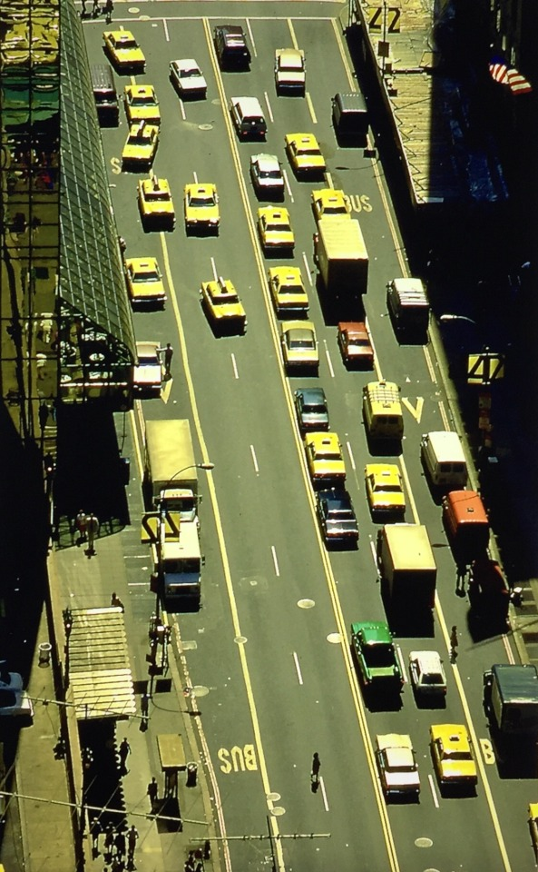

YStoNE
UaNT
Blarney Stone bar on 8th Ave in the 1980s
YStoNE
UaNT
Blarney Stone bar on 8th Ave in the 1980s

Northern Boulevard, Flushing, Queens, NY, 1970. photographer unknown.
I basically LIVED here as a kid.
Punk love, 1983
Sleeping, reading, and eating. Just another day on the subway, 1970s style.
Crack is wack. Keith Haring in 1986 at the Triboro Bridge.
Sunlight on the subway, 1978

Dave’s improved egg cream.
The Unique Clothing Warehouse, Broadway and 4th, 1983

194th Street in the Bronx, 1972
Midnight Cowboy showing on 3rd Ave, 1969
 47th St, NYC, 1982, RA Clayton
Style, 1971
Dude with a rabbit, 1977
(via (53) Pinterest)

A 1973 EE train, with early graffiti
Stand clear of the closing doors!
No nukes! Concert in Battery Park, 1979.

That is one tagged up car! 1981.
Bronx life, 1985
8th Ave and 43rd St, 1985
Dude got a bad horoscope.

Zoolander, 1972, on 5th Avenue

Dude’s got a cute dog, but doesn’t know how to park.

Lonely rider. 1985.

Warning!
1978 fear-mongering, complete with awful grammar.
i have a pic from 96 but i thought you might like it.

Thanks, party on!
For sale, needs some work.
6th Street between 1st Ave and Ave A, 1985

His Bible’s on fire, yo!

St. Marks Bar and Grill, 1984
Jesse Jackson on stage at the Harlem Cultural Festival, 1969

Talking to the crowd, Harlem Cultural Festival, 1969

Getting out of the sun at the Harlem Cultural Festival, 1969

Harlem Cultural Festival, 1969
The Chambers Brothers at the Harlem Cultural Festival in 1969

1970s moms on Broadway near 84th Street.
1967: The first Harlem Cultural Festival, on 128th Street. It would eventually move down to Mount Morris Park.
“Hey, you done with that paper?”
1978
Always time for narcissism! Central Park, 1964

2nd Ave and 60th Street, 1977
Gimbels, 86th and Lex, 1971
Blade on the 2 Train, late 70s

Fighting on 5th Ave, 1983. Mom jeans always win.
70s view of the WTC

1970. How is this still relevant? Fuck you, Supreme Court reactionary dickheads.
Beat cop in Harlem
The original configuration of the Village People wasn’t a success.
East 4th between 1st and 2nd Aves, 1979
If you smoke, 1978

Blowing bubbles outside the Met, 1970s